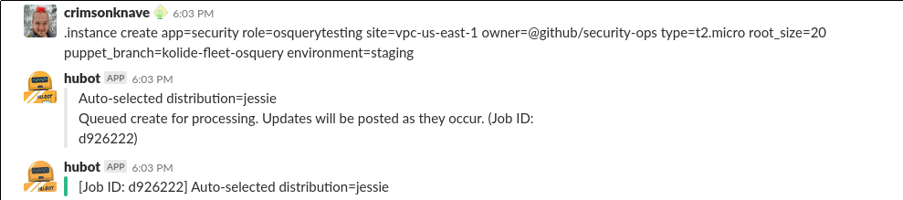
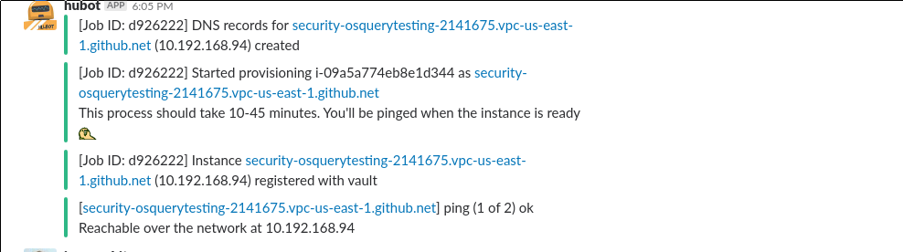
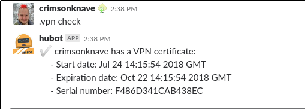
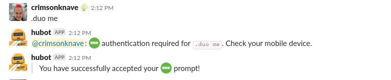
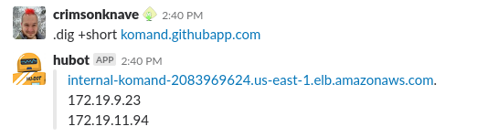
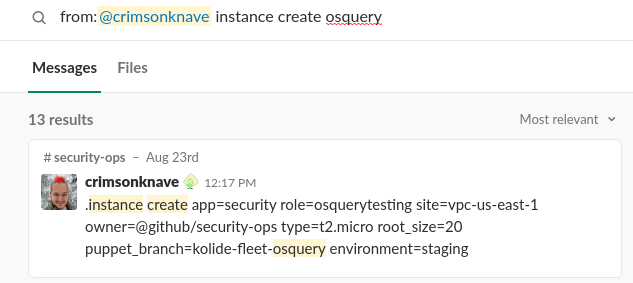
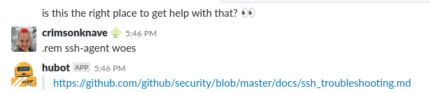
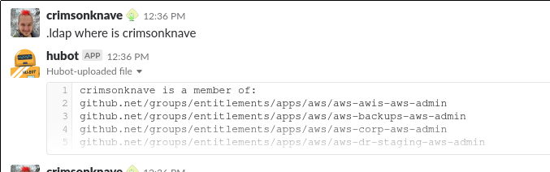
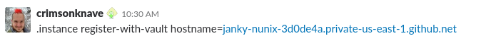
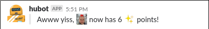

The majority of the examples here are pulled from what my day to day looks like. Happy to discuss what automating other sorts of work might look like.
I talk fast when I'm excited.
I ChatOps, so I'm gonna talk fast.
interrupt me.
Ask
What can you do with ChatOps?
Resource CRUD
Config/setup checks
Single source of truth
Updates
Easy interface
Resource CRUD


Config/setup checks
Am I properly configured to get on the vpn?

Single Source of Truth
You know that pile of scripts you have lying around?

Command line you can never remember the flags for?

I can has updates
Reports on SLA for a SOC
Long running task finished
Ticket created/closed
on your favorite data
Easy Interface
Biking to work... ... No problem!
What server is that script on?
What environment secrets do I need to run this?
Why bother?
Auditability
Discoverability
Teaching
Automation is your friend
Consistency
Secrets, secrets and more secrets
Community
Auditability
If everything you do is in chat, it's all recorded right there in one place. You can link directly to where the discussion happened and the commands were run.
Discoverability

Teaching


Automation is your friend
If you're going to do it, why not in chat?
about a host not in vault?

Consistency
If everything is automated it's hard to mess it up
It's even harder when you can't fiddle with the script
Secrets, secrets and more secrets
A user can't leak them if they never saw them
If it's only used in a single place it's easy to roll
Community
Have fun, build your own jokes
Be nice to folks and give for a job well done

You can get people involved right as you are working
That sounds , but how do you actually do it?
"It's all just code"
All you need to do is take a chat message as input, do some processing and then output your response.
Lots of existing frameworks
Hubot - Javascript
Errbot - Python
Lita - Ruby
Single repo vs multiple
There are lots of ways to add commands to a chatbot.
GitHub has 4
For small scale having everything in a single repo is a good place to start.